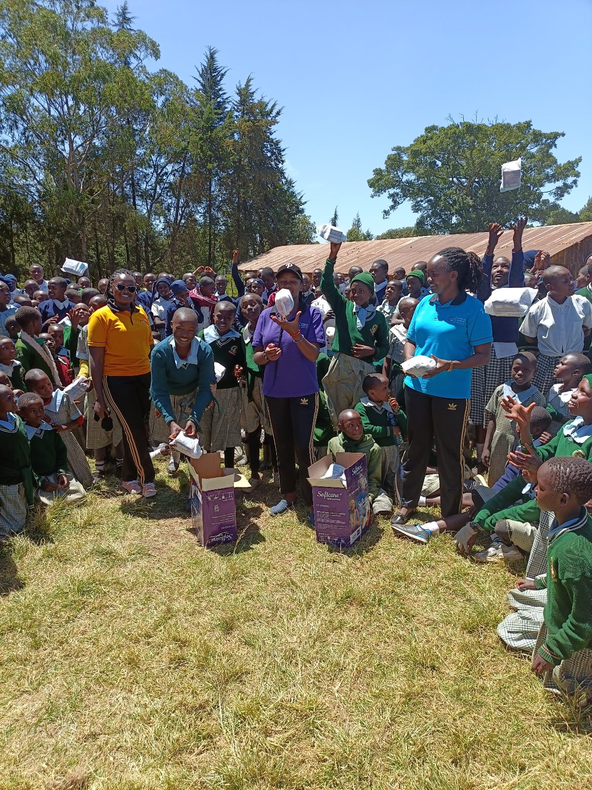

Featured Story
Rescue
She Remembered Our School Visit
In December 2023, a 15-year-old orphan arrived at our door, visibly distressed. She had just earned a place in secondary school, but her uncle planned to put her through FGM and marry her to an elderly man in exchange for cattle.
She remembered Namelok from an awareness programme at her school, and she ran to us. We gave her a scholarship and reported the case to the local chief and government officer, who pledged to protect her.
The girl, now filled with gratitude, envisions a brighter future, promising to complete her education and return to serve her community.Read her story